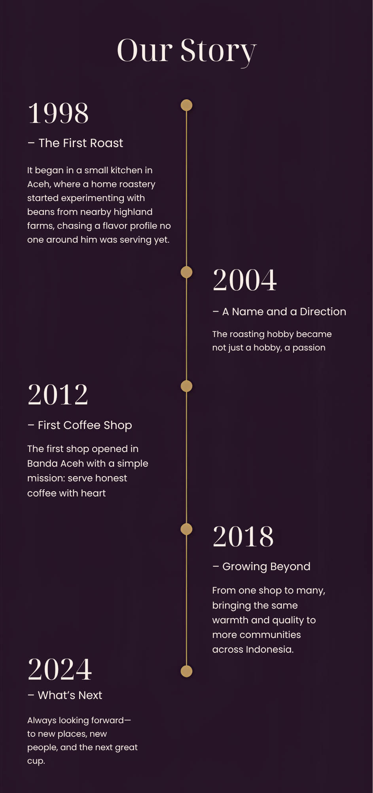

"Kopi bukan sekadar minuman, tapi jembatan antara petani dan penikmatnya."
Bermula dari kecintaan pada kopi Nusantara, Raditya Indra Soerachman mendirikan Kedai Kopi Nusantara dengan satu tujuan sederhana, menghadirkan biji kopi single origin terbaik dari petani lokal ke setiap cangkir. Perjalanan yang dimulai dari dapur kecil ini kini tumbuh menjadi rumah bagi para pencinta kopi yang menghargai proses, asal, dan cerita di balik setiap seduhan.
In every coffee-growing region across the archipelago, there are hands that tend the soil, nurture the trees, and pick each cherry with a patience rarely seen. Kedai Kopi Nusantara was born from a desire to bring that quiet dedication closer to every cup we serve, without disguising where it comes from, without compromising what makes it true. We believe great coffee isn't only about flavor, but about who grew it and the journey it took to reach your table. So from Gayo to Flores, we've committed ourselves to becoming a home for Indonesian single-origin coffee, where every cup carries an honest story of its origin.
We work hand in hand with farmer cooperatives across Sumatra, Sulawesi, Bali, and Flores, buying beans directly and cutting out unnecessary middlemen so growers are paid what their work is truly worth.
From the roasting room to the brew bar, every step follows a standard we hold ourselves accountable to, ensuring each region's natural character comes through clearly in every single cup.
Our relationships with coffee-growing communities are built to last, rooted in consistent pricing, mutual respect, and a shared commitment to sustainable farming for years to come.

| Daerah | Producer | Partner Since | Proses |
|---|---|---|---|
| Gayo, Aceh | Koperasi Tani Gayo Makmur | 2015 | Natural |
| Gayo, Aceh | Kelompok Tani Ketiara | 2019 | Honey |
| Tana Toraja | Kelompok Tani Toraja Highland | 2016 | Washed |
| Tana Toraja | Koperasi Sapan Toraja | 2020 | Natural |
| Kintamani, Bali | Koperasi Subak Abian Kintamani | 2017 | Honey |
| Kintamani, Bali | Kelompok Tani Catur Paramitha | 2021 | Washed |
| Bajawa, Flores | Kelompok Tani Bajawa Bersatu | 2018 | Full Wash |
| Bajawa, Flores | Koperasi Fatima Flores | 2022 | Natural |
| Mandailing, Sumatra Utara | Koperasi Kopi Mandailing Jaya | 2016 | Wet Hulled |
| Sidikalang, Sumatra Utara | Kelompok Tani Sidikalang Tinggi | 2019 | Wet Hulled |
| Kerinci, Jambi | Koperasi Tani Kerinci Seblat | 2020 | Honey |
| Wamena, Papua | Kelompok Tani Baliem Arabica | 2021 | Natural |
| Ijen, Jawa Timur | Koperasi Kopi Ijen Raung | 2017 | Washed |
| Malabar, Jawa Barat | Kelompok Tani Malabar Mountain | 2018 | Full Wash |
| Kalosi, Sulawesi Selatan | Koperasi Kalosi Enrekang | 2022 | Semi Wash |
A cozy space to enjoy authentic Indonesian coffee, meaningful conversations, and moments worth remembering.